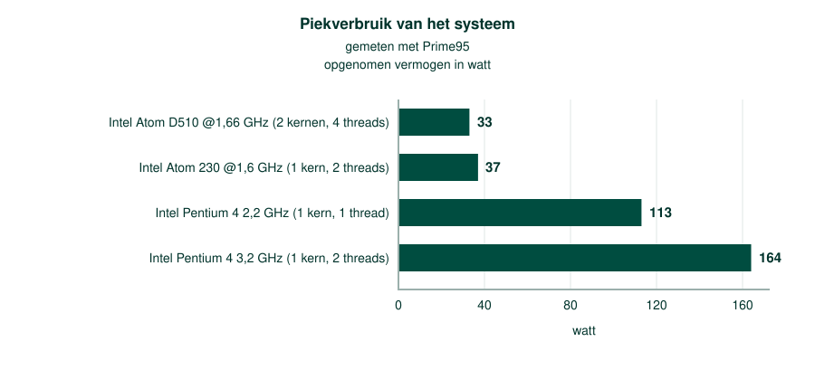

In moderne processoren onderscheiden we twee verschillende instructiesetarchitecturen:
De functie van een computer is het uitvoeren van programma's. In de beginjaren was het schrijven van een programma echter nog een zeer arbeidsintensieve taak. Een programmeur had toen slechts enkel een lagere programmeertaal zoals assembler ter beschikking.
Assembler is de leesbare vorm van machinetaal wat op zijn beurt enkel bestaat uit cijfers. Machinetaal is echter de enige taal die onze computer begrijpt.
Vandaag schrijf je een programma in een hogere programmeertaal en laat je een compiler dat naar machinetaal vertalen. Compileren is dus vertalen naar de instructieset van een processor: de compiler zoekt bij elke regel die je schreef de opcodes die die ene processor kent. Daarmee ligt een gecompileerd programma vast op een instructieset, en moet dezelfde broncode opnieuw gecompileerd worden om op een processor met een andere instructieset te draaien.
Om je een idee te geven van de complexiteit kan je onderstaand programma, geschreven in assembler, eens trachten te ontcijferen...
3: int main() {
00401020 push ebp
00401021 mov ebp,esp
00401023 sub esp,40h
00401026 push ebx
00401027 push esi
00401028 push edi
00401029 lea edi,[ebp-40h]
0040102C mov ecx,10h
00401031 mov eax,0CCCCCCCCh
00401036 rep stos dword ptr [edi]
4: clear();
00401038 call @ILT+0(_clear) (00401005)
5: return 1;
0040103D mov eax,1
6: }Om het programmeerwerk eenvoudiger te maken werden complexe instructies rechtstreeks in de processor gemaakt met behulp van transistorenschakelingen.
Denk bijvoorbeeld aan de mul instructie (=multiply / vermenigvuldigen). In principe is een vermenigvuldiging niets meer dan het herhaaldelijk optellen van een getal. In plaats van de programmeur een lus te laten schrijven waarbij een getal herhaaldelijk werd opgeteld werd deze logica nu in de processor ingebakken met behulp van extra transistor schakelingen.
Door complexe operaties in één instructie te stoppen leverde dat kleinere programma's en minder geheugenbenaderingen op. Dit was, in een tijd waar geheugen zeer duur was, enorm kostenbesparend.
Het nadeel hiervan was dat het aantal transistoren op de processor toenam. Hieruit volgde dan ook dat deze meer plaats innamen en ze minder energiezuinig werden, … In die tijd speelde dat geen zo’n rol gezien er toch nog geen sprake was van mobiele apparaten maar vandaag de dag is dat een grote beperking.
Het voorbeeld bij uitstek van CISC is de x86 instructieset die gebruikt wordt bij klassieke Intel en AMD processoren.
Er zijn drie hoofdvarianten van de x86-instructieset, de 16 bits-variant, de 32 bits-variant en de 64 bits-variant. Deze laatste wordt ook wel de x64 of amd64 instructieset genoemd.
In de winkel kan je geen 32 bit processor meer verkrijgen dus alle moderne processoren zijn van het type 64 bit.
Ironisch gezien is wat vroeger beschouwd werd als een voordeel bij CISC nu een nadeel. De vele instructies die rechtstreeks aanwezig zijn op de processor, worden gemaakt met transistoren. Iedere transistor neemt ruimte in beslag en verbruikt energie.
Eén van Intel's meest energieconsumerende CISC processoren, de oude Pentium 4 verbruikte maar liefst 160 Watt, het equivalent van zo’n drie gloeilampen.

Het hoge energie maakt het gebruik van CISC processoren in mobiele apparaten zoals tablets en smartphones zo goed als onmogelijk.
Vandaar dat de RISC instructiesetarchitectuur ontworpen werd. Met minder transistoren wordt in principe dezelfde functionaliteit aangeboden als bij de CISC architectuur. Gezien we nu ook beschikken over hogere programmeertalen en geavanceerde compilers hoeft de programmeur zich bijna niets meer aan te trekken van de onderliggende hardware.
De meest bekende RISC instructieset is de ARM instructieset ARM staat voluit voor Acorn RISC Machine.
Spijtig genoeg kunnen programma's die gemaakt zijn met de ARM instructieset enkel uitgevoerd worden op een ARM processor. Ook programma's die gemaakt zijn voor de x86 instructieset kunnen enkel uitgevoerd worden op een x86 compatibele processor.
Dit verklaart deels waarom onze desktops en laptops nog steeds x86 processoren hebben. Moesten we volledig overschakelen op ARM processoren dan wordt alle reeds geschreven software ineens onbruikbaar.
Een ander nadeel is dat ARM processoren voorlopig nog trager zijn dan hun x86 broertjes. Waar energieconsumptie geen zo'n rol speelt worden dus nog volop x86 processoren gebruikt.